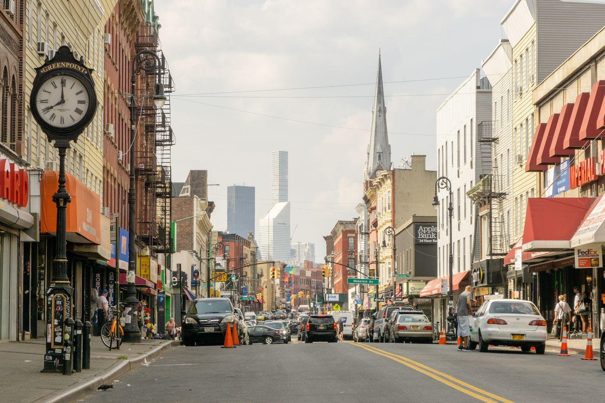
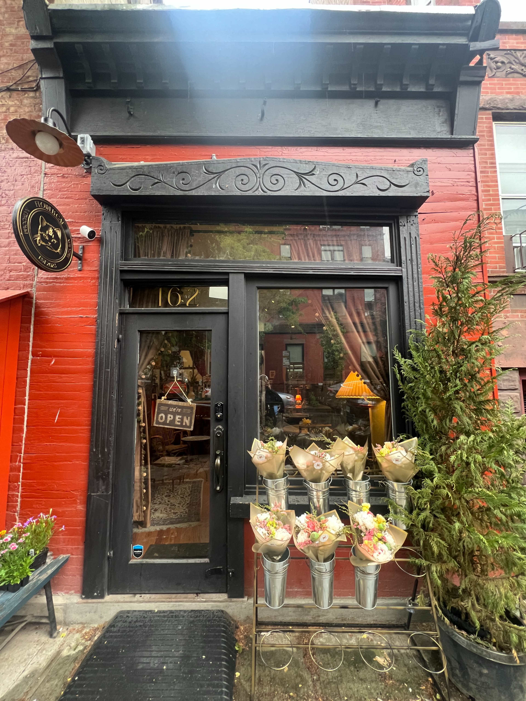
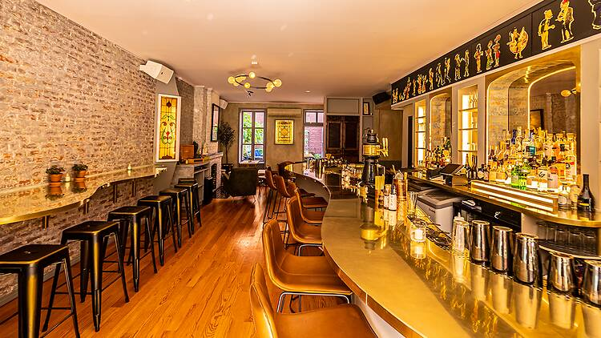

Why Greenpoint?
Greenpoint: a blend of classic and new
Greenpoint is the northernmost neighborhood in Brooklyn, New York City, known for its vibrant community, rich Polish heritage, and a mix of old and new businesses. It features a blend of historic charm, waterfront views, and a growing arts scene, making it a popular area for both residents and visitors.
Originally farmland, Greenpoint transformed during the Industrial Revolution, attracting working-class families, particularly from Poland. The neighborhood has retained much of its historic charm while evolving into a hub for nightlife and arts. Greenpoint's unique blend of history, culture, and community makes it a distinctive part of Brooklyn, appealing to a diverse range of residents and visitors.
Discover
My favorite spots in Greenpoint

Flower Cat Coffee
Flower Cat is a flower shop + cafe based in Greenpoint, Brooklyn. They offer floral arrangements, coffee, wine, and a safe space for cat lovers.
Address
162 Noble Street, Brooklyn NY 11222
What I like
Flower cat is both cozy and cute, with great specialty coffee drinks. It's a great community spot hidden on a quiet side street.
Learn MoreFlower Cat Coffee
WNYC Transmitter Park is a 1.6-acre waterfront destination park located along the East River in Greenpoint, Brooklyn where Greenpoint Avenue terminates at the river. The park opened in 2012 after a two-year, $12 million redevelopment project. The park offers natural wetland landscaping, vast gardens, a nautically-themed children’s play area, a pedestrian bridge and a pier with stunning views of Manhattan.
Address
West St. bet. Kent St. and Greenpoint Ave.Brooklyn.besides East river, Brooklyn, NY 11222
What I like
I take my dog to this park almost every morning! It's never too crowded, and you can walk out and sit by the water, and bask in peaceful views of the city.
Learn More
Little Rascal
Newly opened in 2022 in the heart of the Greenpoint waterfront district, Little Rascal Greenpoint is a partnership with world-renowned mixologist Keith Larry. Their elevated cocktails showcase inventive ingredients handcrafted in-house: everything from vermouth and bitters to curaçao and falernum. In addition to their extensive cocktail program, they offer a curated list of natural and biodynamic wines, and a menu steeped in traditional Mediterranean flavors.
Address
130 Franklin Street, Brooklyn NY 11222
What I like
This was the first venue I explored in Greenpoint! Beautiful interior, high-end but not pretencious vibe. Delicious burger, great wine selection, well balanced cocktails, including NA options.
Learn More